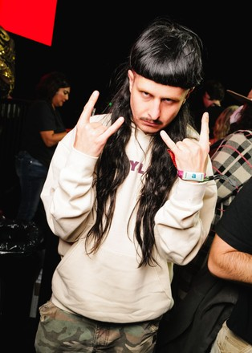
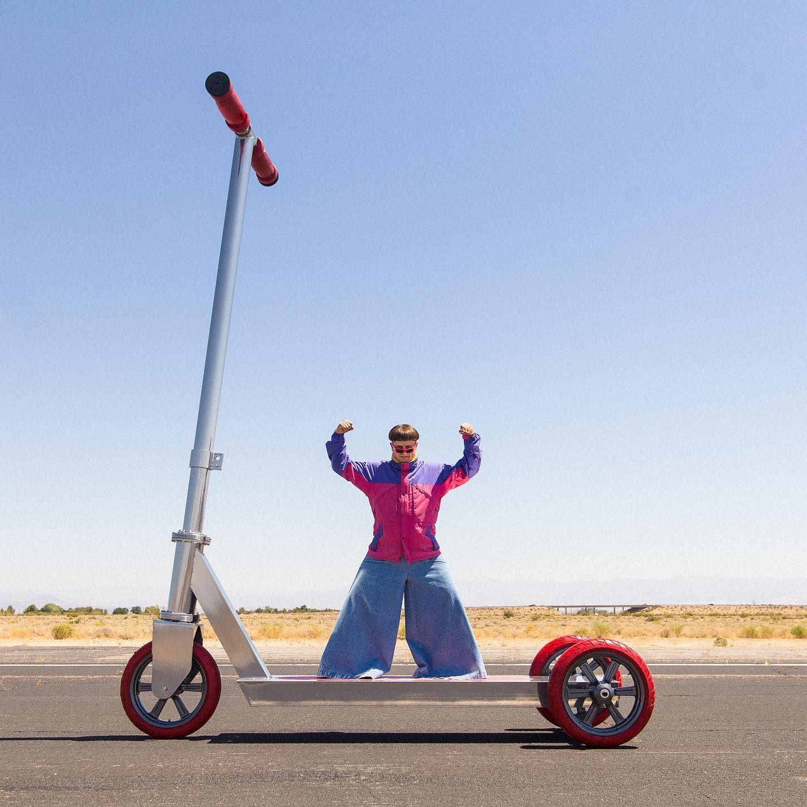

Entre 2019 e 2021, havia namorado com a também cantora Melanie Martinez. A relação passou por fases difíceis e, em 2020, veio a separação definitiva. Oliver falou abertamente sobre a depressão que enfrentou depois do término, agravada pelos ataques que recebia nas redes sociais de fãs da Melanie que não aceitavam bem o fim do casal. Deste então, tinha um relacionamento com a modelo Fiona Chernavskaya até a sua morte. Seu primeiro post no Instagram foi uma foto dele, sendo destaque em um post de moda do LA Weekly sobre o festival Coachella.
O que tornava Oliver Tree único como artista era que, além de cantar e produzir sua própria música, ele dirigia a maioria dos seus clipes. Esses vídeos teatrais e propositalmente absurdos reforçavam sua imagem de artista que transformava o exagero em arte. Não à toa, sua formação em Tecnologia Musical pelo Instituto de Artes da Califórnia (CalArts) foi fundamental para que ele tivesse esse controle total sobre a própria obra.
Oliver Tree foi um piloto profissional de patinete (scooter) antes de alcançar fama global como músico. Ele andava de patinete de forma competitiva quando era adolescente e chegou a quebrar alguns ossos devido a manobras e quedas. Antes da música, ele teve patrocínio de marcas conhecidas do esporte, como a Razor.
Ele detém o recorde mundial do Guinness World Records para o maior patinete do mundo (largest kick scooter), feito que ele realizou em maio de 2020.
Detalhes do Recorde:

Em entrevista concedida menos de dois meses antes de sua morte, o músico norte-americano Oliver Tree revelou que tomou a decisão de não deixar sua fortuna para familiares. O artista detalhou o plano em 24 de abril de 2026, durante participação no videocast Zach Sang Show:
Vídeo de Oliver Tree no Zach Sang Show, dublagem por Douglas "Batata" Barbosa"Não acredito que nenhuma riqueza ou coisa gerada por ela seja minha. Já deixei claro em meu testamento que, quando eu morrer, ninguém da minha família receberá um centavo, nada", afirmou o cantor na ocasião.
De acordo com o depoimento de Tree, todo o patrimônio acumulado ao longo da carreira será transferido para uma instituição filantrópica idealizada por ele:
"A ideia é que, quando eu morrer, todo o dinheiro volte para os artistas. Criei uma fundação, chama-se Bolsas de Arte para Jovens Gênios do Dr. Oliver Tree. Foi estruturada de forma que, basicamente, os juros gerados pela minha música serão a principal fonte de financiamento", explicou.